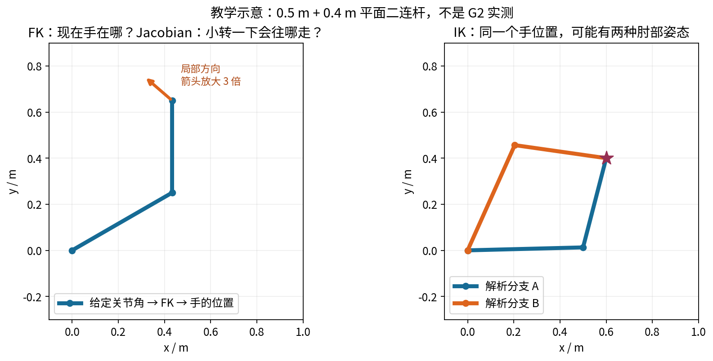
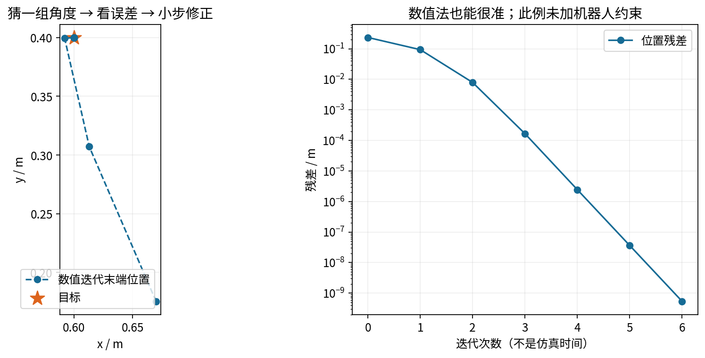
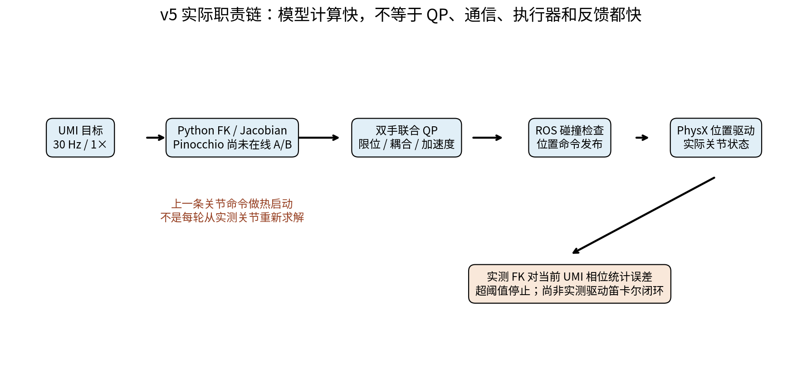
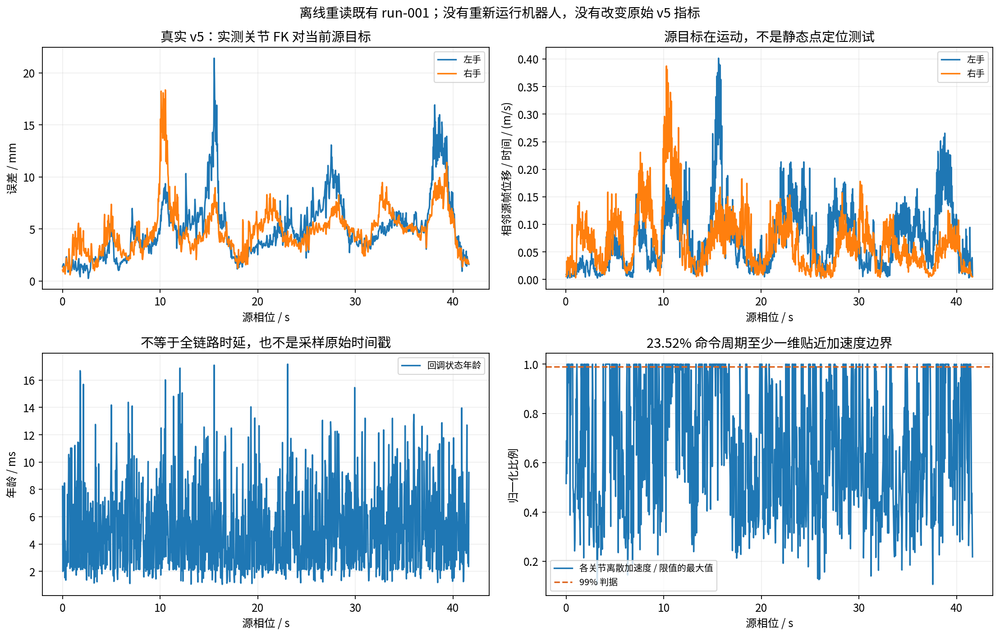
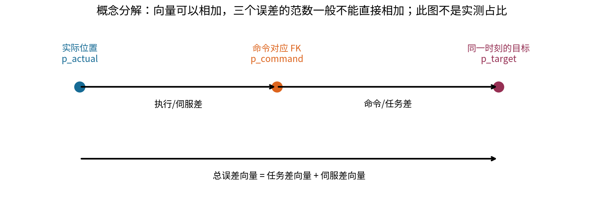

从 VLA 到全身 IK：配图与实测解读
完整中文教程（Markdown） · 本轮统计与输入 SHA256 · WBC 路线
模型一致性 ≠ 机器人跟踪精度。 1.913e-15 m 是两个 FK 实现对同一状态的结果差；21.410 mm 是历史 v5 左手最大动态跟踪误差。本轮只读日志、运行教学例子，没有移动机器人或切换在线后端。
四个先记住的结论
- FK 是正运动学；Jacobian 中文叫雅可比矩阵。v5 本来就使用雅可比＋QP，BioIK 主要负责首帧。
- 2.614 → 0.230 ms 是离线模型段 P95，约 11.37 倍；中位数比才是约 12.4 倍。不代表整链提速相同倍数。
- 解析求导、数值差分、解析 IK、数值 IK 是不同概念。用解析雅可比做数值 IK 不矛盾。
- v5 23.52% 命令周期至少一维贴近加速度边界，但速度没有贴近上限；尚不能据此精确分摊厘米误差的原因。
1. 正解、逆解与雅可比

2. 数值法也能把模型残差降得很小

3. 模型快，不等于执行器和整条链都快


4. 重读真实 v5 日志，不猜测原因占比

5. 下一步应记录什么
